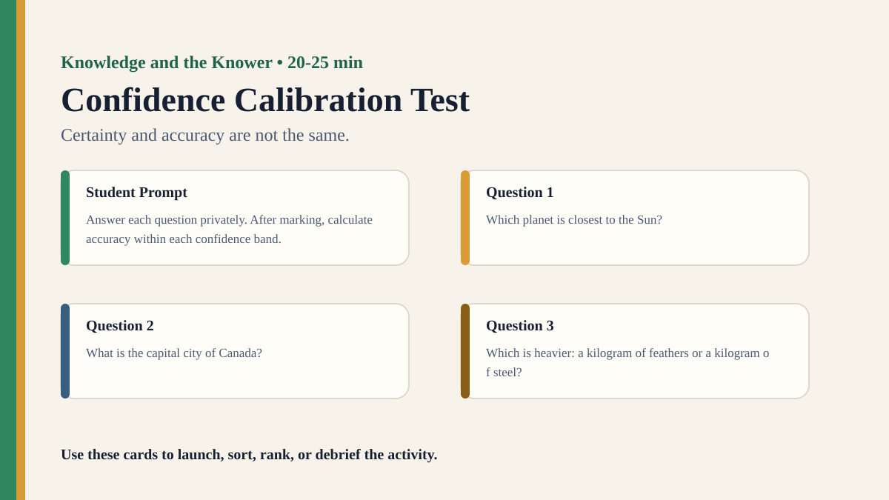

Premium draft resource
Confidence Calibration Test Classroom Run Kit
Students compare how confident they feel with how accurate they actually are.
Back to Confidence Calibration Test
One-Minute Teacher Brief
Students compare how confident they feel with how accurate they actually are.
Big idea: Certainty and accuracy are not the same.
Student Prompt
Answer each question, then mark your confidence: 50%, 60%, 70%, 80%, 90%, or 100%.
Concrete Stimulus Packet
Stimulus
Student Prompt
Answer each question privately. After marking, calculate accuracy within each confidence band.
Do not allow lookup; the point is calibration, not trivia mastery.Stimulus
Question 1
Which planet is closest to the Sun?
Confidence: 50% / 60% / 70% / 80% / 90% / 100%Stimulus
Question 2
What is the capital city of Canada?
Confidence: 50% / 60% / 70% / 80% / 90% / 100%Stimulus
Question 3
Which is heavier: a kilogram of feathers or a kilogram of steel?
Confidence: 50% / 60% / 70% / 80% / 90% / 100%Stimulus
Question 4
In which year did the Berlin Wall fall?
Confidence: 50% / 60% / 70% / 80% / 90% / 100%Stimulus
Question 5
What is the chemical symbol for potassium?
Confidence: 50% / 60% / 70% / 80% / 90% / 100%Stimulus
Question 6
Which country has the longest coastline in the world?
Confidence: 50% / 60% / 70% / 80% / 90% / 100%Stimulus
Question 7
How many bones are in the adult human body?
Confidence: 50% / 60% / 70% / 80% / 90% / 100%Stimulus
Question 8
What is the only mammal capable of true sustained flight?
Confidence: 50% / 60% / 70% / 80% / 90% / 100%Stimulus
Question 9
Which has more letters: the Greek alphabet or the modern English alphabet?
Confidence: 50% / 60% / 70% / 80% / 90% / 100%Stimulus
Question 10
Without looking it up, what is the 19th digit after the decimal point in pi?
Confidence: 50% / 60% / 70% / 80% / 90% / 100%Actual Lesson Questions
| # | Question for students | Teacher key / cue |
|---|---|---|
| 1 | Which planet is closest to the Sun? | Mercury |
| 2 | What is the capital city of Canada? | Ottawa |
| 3 | Which is heavier: a kilogram of feathers or a kilogram of steel? | Neither — they weigh the same |
| 4 | In which year did the Berlin Wall fall? | 1989 |
| 5 | What is the chemical symbol for potassium? | K |
| 6 | Which country has the longest coastline in the world? | Canada |
| 7 | How many bones are in the adult human body? | 206 |
| 8 | What is the only mammal capable of true sustained flight? | Bat |
| 9 | Which has more letters: the Greek alphabet or the modern English alphabet? | English alphabet — 26 vs Greek 24 |
| 10 | Without looking it up, what is the 19th digit after the decimal point in pi? | 4 |
Student Task
Complete the quiz, mark confidence for every answer, then compare confidence bands with actual accuracy.
Teacher Key / Reveal
Where were we most confident but least accurate, and what does that reveal about certainty as a way of knowing?
- Q1: Mercury
- Q2: Ottawa
- Q3: Neither — they weigh the same
- Q4: 1989
- Q5: K
- Q6: Canada
- Q7: 206
- Q8: Bat
- Q9: English alphabet — 26 vs Greek 24
- Q10: 4
Classroom materials
Printable Pack and Cards
Open the classroom resource pack for stimulus cards, CSV card deck, and the activity visual prompt.
Visual Prompt

Setup Checklist
- Prepare a starter stimulus using: Ten general knowledge questions with confidence bands from 50% to 100%.
- Print or project the student response grid before the activity begins.
- Plan a private first-response moment before any group discussion.
Ready-to-Use Examples
- Ten general knowledge questions with confidence bands from 50% to 100%.
- A mini quiz mixing easy, medium, and impossible questions so overconfidence becomes visible.
- A class calibration chart comparing confidence level with actual accuracy.
Run Resources
- Printable student worksheet with observation, inference, evidence, and confidence columns.
- Teacher notes with setup checklist, sample facilitation language, misconceptions, and assessment look-fors.
- Classroom run kit with prompt cards, example stimuli, and debrief moves.
- PowerPoint deck with a student-facing sequence for running the activity.
Teacher Language
- Write your first judgement before we discuss it; the first answer is useful evidence.
- Separate what you noticed from what you inferred.
- What would make this knowledge claim more reliable?
Sample Student Output
- A student claim connected to Confidence Calibration Test: "My first judgement felt obvious, but my evidence was thinner than I realised."
- A revised claim that names a method, perspective, or language choice that changed the result.
- A knowledge question that moves beyond the activity example.
Procedure
- Give students general knowledge questions. For each answer they also write a confidence level: 50%, 60%, 70%, 80%, 90% or 100%.
- Mark the answers.
- For each confidence band, calculate actual percentage correct.
- Ask students whether they were overconfident, underconfident or well calibrated.
Debrief Questions
- Knowledge question: Is certainty a reliable indicator of knowledge?
- What is the difference between confidence, belief and justification?
- Why might experts sometimes be better calibrated than beginners?
Adaptations
- Short lesson: use only the first example, one response grid, and one debrief question.
- Long lesson: add a second round where students revise the method and compare outcomes.
- Low-tech option: run with printed cards, sticky notes, and a board tally.
Extension Tasks
- Design a second version of the activity that tests the same knowledge issue in another AOK.
- Find a real-world example where the same knowledge problem matters outside the classroom.
- Write a 150-word TOK exhibition-style commentary using the activity as the object context.